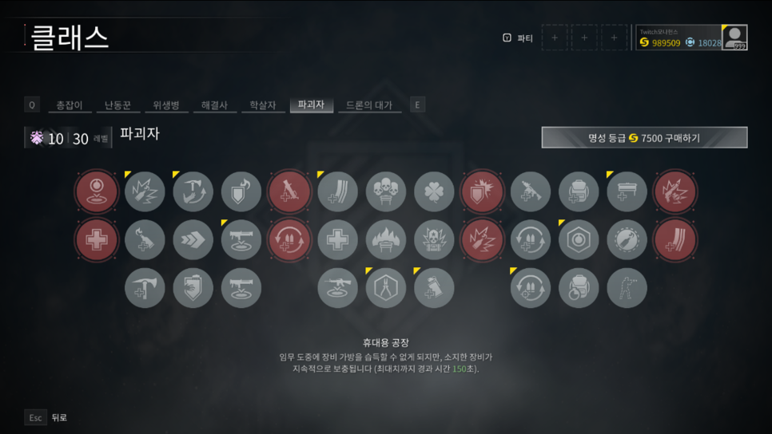

추천하는 직업과 특성
나는 첫 시작을 총잡이로 시작해서 명성 5레벨까지 찍었다. 그 이후 잡다하게 이것저것 찍어먹어봤지만 개인적으로 파괴자만큼 초보자에게 좋은 직업은 없는 것 같다.
우수한 화력에 사기특성인 차폐, 굳이 헤드샷을 노리지 않아도 되는 편리함까지. 팔방미인인 직업이다.
파괴자 장점
- 장비와 각종 특성들로 메인웨이브 좀비들한테 압도적 살상능력.
- 노 쿨타임과 다를 바 없는 무한 은폐
- 각종 방어 물자 관련 특성으로 방어전에 특화
- 운용하기 쉬운 난이도
파괴자 단점
- 타클래스들한테 밀리는 특수 좀비처치 능력
- 이상한 피격판정의 화염병(던졌는데 나뭇가지에 막히는건 안 비밀)
- 공방에서 쓰기 힘든 클래스
추천총기
- 반자동소총계열(1등급 정찰소총, 2등급 민간단축형소총, 3등급 전투소총)
- 상황에 따라 샷건계열(2등급 교전용 산탄총, 3등급 돌격용 산탄총)
- 2등급 표준전투소총, 표준전투소총 명성스킨
- 3등급 전투소총 블루코인스킨
- 2등급 클래식 불펍 소총
- 3등급 불펍 소총
대체로 완전자동계열 총기들만 안 쓰면 된다. 메인웨이브를 처치하는데 최적화된 클래스인 파괴자는 웨이브 상대로 취약한 처치량을 보여주는 완전자동소총들과 상성이 좋지 않다. 그러니 높은 DPS를 보여주는 대부분의 반자동소총들을 추천하고 밑에서 위로 올라오는 피라미드 형태의 웨이브에는 교전용 산탄총, 돌격용 산탄총같은 샷건들이 높은 처치량을 보여주니 상황 맞춰서 사용하면 된다.
특성
설명이 귀찮으니 이대로만 찍으면 된다. (자세한 설명은 아래 출처에서)
모든 출처는 모나헌스님의 블로그에서 퍼왔다.